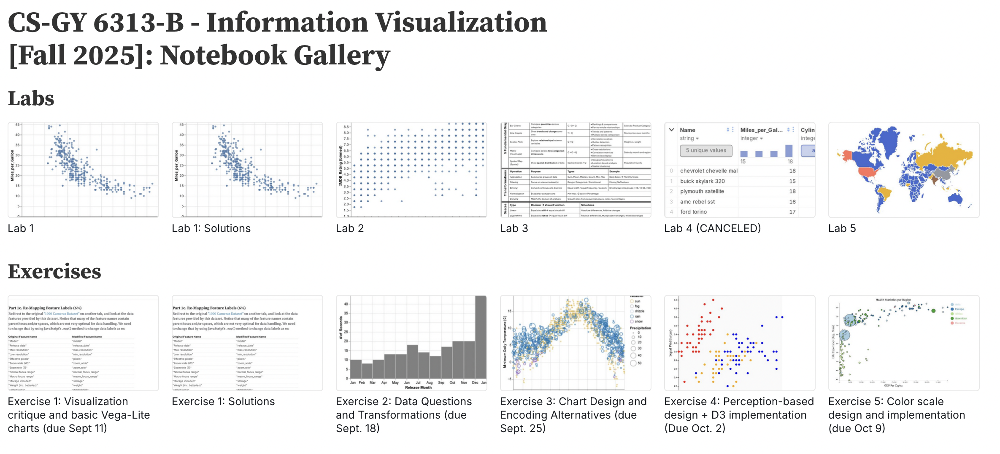
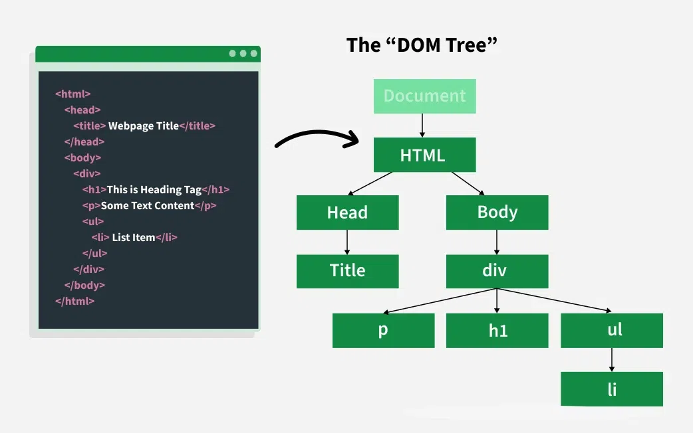
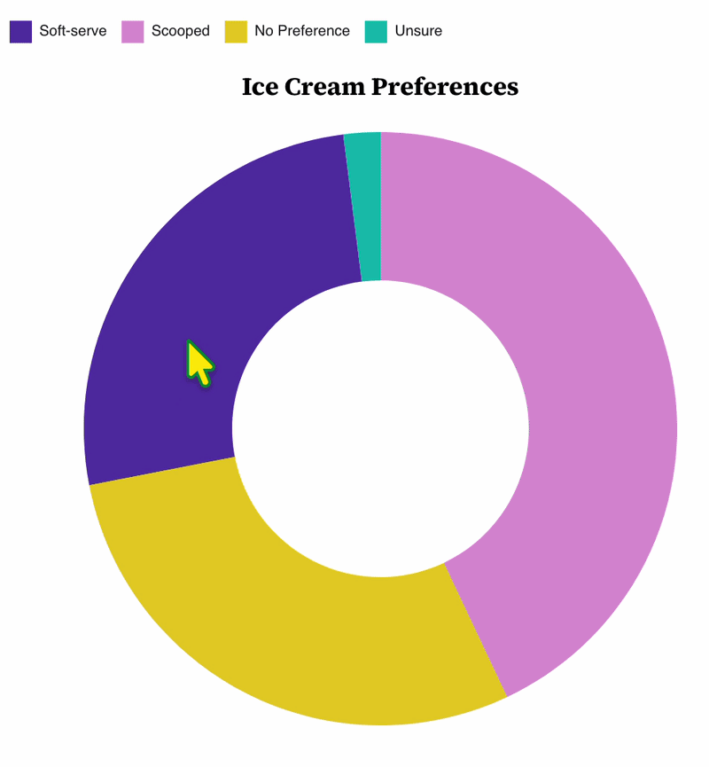

Week 6 Lab: Intro to Interactions and Deceptive Visualizations
CS-GY 6313 - Information Visualization
New York University
2026-10-09
Week 6 Lab Overview
| User Interface | Graphics Library | Notebook |
|---|---|---|
| observablehq.com | D3 | Week 6 Lab Notebook |
Today’s Lab Activities
Today we will be a exploring the following topics:
- Review: HTML DOM and Event Handling
- Basic Example: Buttons and Observable
- New Chart: Pie Chart
- Mouse Interactions
- Group Activity
- Wrap up & Sharing
Resources for You

Review: DOM and Event Handling

Image souce: GeekForGeeks
Manipulating the DOM
- Direct manipulation: Users interact directly with the data in the visualizations (e.g., by clicking the bar or item). This must be implemented as part of the visualization itself and requires JS event handling.
- Indirect manipulation: Users interact with a separate, but linked interactive element (e.g., search field to filter). In Observable we can use the Input library for the input forms; in normal HTML5 websites, we need use form elements such as
<button>and<input>.
Example:
interactivity = {
const svg = d3.create("svg")
.attr('width', width)
.attr('height', 50);
const data = [1, 2, 3];
const circles = svg.selectAll("circle")
.data(data)
.enter()
.append("circle")
.attr("r", 10)
.attr("cy", 25)
.attr("cx", (d, i) => 30 + i * 30)
.on("click", function (event, d) {
console.log(`clicked on: ${d}`);
const circle = d3.select(this); // can't use arrow scoping
circle.style("stroke", "orange").style("stroke-width", "3px");
});
return svg.node();
}Event Handling Syntax
.on(<EVENT>, <HANDLER FUNCTION>)= We are attaching the<HANDLER FUNCTION>onto the<EVENT>."click"= We want to attach our function to whenever the user mouse-clicks onto a circle.function(event, d)= This handler function has access to the event details as well as the data binded to it.
W3Schools to look up the common event types and their functions
Basic Input Types
HTML allows you these common types, which you can read more about here: HTML Input Types.
Here are some common types:
| Input Type | Description | HTML Tag |
|---|---|---|
| Button | Do something when a button is clicked | <input type="button"> or <button> |
| Checkbox | Toggle between two values (on or off); choose any from a set | <input type="checkbox"> |
| Radio | Toggle between two values; choose only one from a set | <input type="radio"> |
| Range / Number | Choose a number in a range | <input type="range"> / <input type="number"> |
| Select | Choose one or any from a set (drop-down menu) | <select> and <option> |
| Text | Enter freeform single-line text | <input type="text"> |
| Textarea | Enter freeform multi-line text | <textarea> |
| Date or Datetime | Choose a date | <input type="date"> or <input type="datetime-local"> |
| Color | Choose a color | <input type="color"> |
| File | Choose a local file | <input type="file"> |
Case Example: Buttons
JavaScript (and by extension, TypeScript) natively allows us to access the DOM and create, modify, or delete HTML elements. We’ve provided an example of a button that is coded to increment a count variable every time you click it.
Let’s observe how we modify attributes such as style, text content, and event listeners to the buttons and other related HTML elements.
// Let's define a local-scope `count` that's a number.
let count : number = 0;
// We'll create a new `<button>` and attach it to the DOM of this web document
const button = document.createElement("button");
button.textContent = "Increment";
// We'll also create a `<span>` and also add it to the DOM.
// We'll add some styling to make it look good with the button.
const output = document.createElement("span");
output.style.display = "inline-block";
output.style.marginLeft = "8px";
output.textContent = String(count);
// We'll add a new event to catch when the user clicks the button.
button.addEventListener("click", () => {
// We increment the count, and update the output span's text content.
count++;
output.textContent = String(count);
});
// We'll create a div, style it, and append the button and output span to it.
const container = document.createElement("div");
container.style.display = "inline-block";
container.style.marginBottom = "12px";
container.append(button, output);
// We render the container next to their code block in Observable.
display(container);Part 1: Defining our count variable
If we use let, then we’re indicating that though the count is technically accessible by other code blocks, we’re restricting its scope to the current code block. We are allowing it to be reassigned.
Part 2: Creating our button
We can create new elements using .createElement(HTML TAG).
Part 3: Creating a text display
Similarly, we also use .createElement(HTML TAG) here. We modify some additional attributes of our new <span> element too.
// We'll also create a `<span>` and also add it to the DOM.
// We'll add some styling to make it look good with the button.
const output = document.createElement("span");
output.style.display = "inline-block";
output.style.marginLeft = "8px";
output.textContent = String(count);Part 4: Event Listeners for our button
We use an arrow function with an event listener that checks if the user clicks on the button. If so, we update not just count but the <span> displaying it.
Part 5: Creating wrapper <div>s
To keep things neat, we wrap both the button and the output <span> into a container element.
Alternative Way for Content Generation, Observable-Style
There is an alternative way that you can create HTML elements, specific to Observable. Observe the code below; this produces the same output as the above code, but using Observable logic.
let count2 : number = 0;
// Programmatically create an HTML button
const increment_button = html`<button>Increment</button>`;
// Programmatically create an output span
const output_span = html`<span style="display:inline-block;margin-left:8px;">${count2}</span>`;
// Attach an event to `onclick`.
increment_button.onclick = () => {
++count2;
output_span.textContent = String(count2);
}
// Programmatically create the div that wraps these elements
const container = html`<div style="display:inline-block;margin-bottom:12px;">${increment_button}${output_span}</div>`;
display(container);In-Lab Exercise: Creating An Interactive Button Panel (10 mins.)
Create some code that does the following:
- Initializes a variable
calc_valuethat is set to 0 by default. - Create 5 buttons that do the following:
- Increments
calc_valueby 1 - Decrements
calc_valueby 1 - Multiplies
calc_valueby 2 - Divides
calc_valueby 3 - Resets
calc_valueto 0
- Increments
How you create the HTML or style it is not important.
Warning: Observable Shenanigans
You must note the following behavior when working with Observable notebooks:
- Even though Observable exposes variables between code blocks…
- … variables are not dynamically updated if they are changed in their original code block.
In our lab notebook, we defined count and count2 and incremented them using buttons. If we attempt to implement the code below and play around with our two buttons…
… you’ll quickly realize that no matter how many times you increment either count or count2 via the buttons, it won’t change sum.
Core Idea: Keep Code Self-Contained
Treat variables from other code blocks as read-only. Each code block must independently determine their own inputs, interactions, etc.
If you are really interested in having values in specific observable blocks be used and updated whenever those values are changed, then you can read last year’s lab notebook.
Mouse Events
Mouse events are events tied specifically to mouse interactions with the DOM. This is useful for generating tooltips, similar to Vega-Lite’s .tooltip() modifier we’ve worked with prior.
There are three events that will be key to mouse interactions in JavaScript:
mouseover: Triggers when the mouse begins to hover over an element.
mousemove: Triggers when the mouse moves along the screen.mouseout: Triggers when the mouse stops hovering over an element.
We will need to access these events and the data binded to them.
Example: Pie Charts and Ice Cream Preferences
Technically a donut chart
| Type | Value | Total |
|---|---|---|
| Soft-serve | 286 | 1,098 |
| Scooped | 472 | 1,098 |
| No Preference | 318 | 1,098 |
| Unsure | 22 | 1,098 |

const path = svg.chart.selectAll('path')
.data(pie(pie_data))
.enter()
.append('path')
// ...
.on('mouseover', function (d, i) { // Add a listener to `mouseover`
d3.select(this) // Make D3 pay attention to the current `path` element
.attr('opacity', '.75') // Modify the opacity to be 0.75
})
.on('mouseout', function (d, i) { // Add a listener to `mouseover`
d3.select(this) // Make D3 pay attention to the current `path` element
.attr('opacity', '1') // Modify the opacity to be 1.0
});Why traditional function over arrow function?
One of the key differences between traditional functions and arrow functions is the scope of this.
- In traditional functions,
thisrefers to the immediate object that called the function. - With arrow functions,
thisrefers to the global context.
Transitions
Sometimes we want these dynamic changes to have transitions. This allows the interactions of your charts to appear more visually interesting.
Observe the following code sample:
In this code example, when <body> is loaded into the DOM, D3 will perform a transition to adjust the “background-color” of <body> to “red”. D3’s transitions support various transition types, such as .transition().attr() and .transition().style().
In-Lab Exercise: Adding Transitions (5 mins.)
Copy the pie chart code and modify the chart so that, on both mouseover or mouseout, add a transition that has a duration of 1000ms (1 sec.).
You are free to re-use color_scale, arc, pie, and all the dimensional variables such as _width and _margins without needing to copy them.
Solution
// Instantiate our SVG. Reusin g some old variables
let svg = instantiate_chart({
width:_width,
height:_height,
margins:_margins,
titles:{chart:'Ice Cream Preferences'}
});
// The novelty comes from the two new events we are considering: `mouseover` and `mouseout`
let path = svg.chart.selectAll('path')
.data(pie(pie_data))
.enter()
.append('path')
.attr('d', arc)
.attr('fill', (d) => color_scale(d.data.type))
.attr('transform', `translate(${_width/2}, ${_height/2})`)
.on('mouseover', function (d, i) { // Add a listener to `mouseover`
d3.select(this) // Make D3 pay attention to the current `path` element
.transition(1000) // Make a transition
.attr('opacity', '.75') // Modify the opacity to be 0.75
})
.on('mouseout', function (d, i) { // Add a listener to `mouseover`
d3.select(this) // Make D3 pay attention to the current `path` element
.transition(1000) // Make a transition
.attr('opacity', '1') // Modify the opacity to be 1.0
});End of Lab
- Exercise #6 will be posted tonight and is due on October 15th @ 11:59pm!
- Where do I ask questions?
- Office Hours!
- Our course Discord!